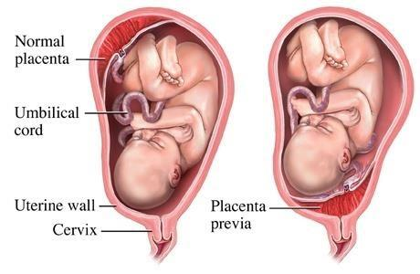
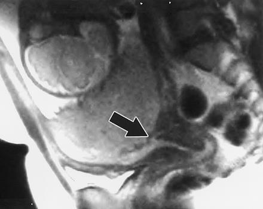
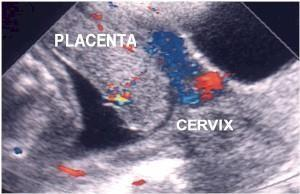
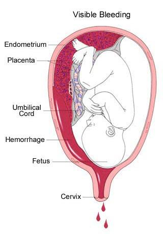
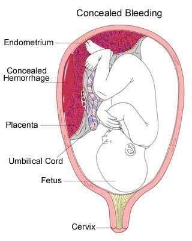
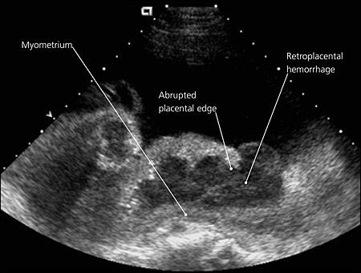
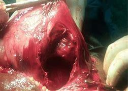

1ILOs of this chapter
By the end of this chapter the student should be able to:
- To understand the etiological classification of APH
- To be able to differentiate clinically between APH due to placenta previa or abruptio placentae
- To be able to describe the management of placenta previa and abruptio placentae
- To be able the explain the management of both ruptured uterus and vasa previa
- To realize the possible complications of placenta previa and abruptio placentae
2Definition
Bleeding from the vagina occurring at any time after 20th week of pregnancy and before the child birth.
Bleeding before 20 weeks (early pregnancy bleeding) is conventionally classified as a threatened/missed/inevitable abortion and is covered in Chapter 05. Bleeding after 20 weeks — APH — is a separate clinical entity because the fetus is potentially viable, the bleeding is more likely to be severe, and the differential diagnosis is dominated by placental causes.
3Etiology (Classification)
Four etiological categories — two placental, one fetal, one extra-placental.
1 · Placenta Previa
Hemorrhage due to partial separation of abnormally situated placenta in the lower uterine segment.
2 · Accidental Hemorrhage / Abruptio Placenta
Hemorrhage due to partial separation of normally situated placenta (in the upper uterine segment).
3 · Vasa Previa
Fetal hemorrhage (bleeding of fetal origin) due to laceration of abnormally situated umbilical (fetal vessels) vessels.
4 · Extraplacental Bleeding (Incidental Hemorrhage)
Rupture uterus, hemorrhage due to lesions of the cervix or vagina as erosion, polyp or carcinoma.
4Placenta Previa — Definition & Incidence
Antepartum hemorrhage (APH) due to premature separation of abnormally situated placenta (in the lower uterine segment).
5Placenta Previa — Degrees (Types I–IV)
Four degrees are recognised, based on the relationship of the placental edge to the internal cervical os.
| Type | Name | Description |
|---|---|---|
| I | Placenta previa lateralis | The placenta is only partially attached to the lower uterine segment, which may be anterior or posterior. |
| II | Placenta previa marginalis | A great part of the placenta is attached to the lower uterine segment so that its lower margin reaches down to the internal os. |
| III | Incomplete placenta previa centralis | The placenta covers the internal os when it is closed or partially dilated but not when it is fully dilated. |
| IV | Complete placenta previa centralis | The placenta covers the internal os completely whether the cervix is partially or fully dilated. |


6Placenta Previa — Clinical Picture
Symptoms
- It usually presents as painless causeless recurrent vaginal bleeding in third trimester.
- Mean gestational age at diagnosis is 32 weeks.
- Associated with increased risk of congenital abnormalities and intra-uterine growth restriction.
Abdominal findings
- Abdomen is lax, no tenderness or rigidity.
- Fundal level equals the period of amenorrhea.
- Fetal parts are easily felt.
- FHS usually normal.
- Malpresentation & non-engagement: common.

7Placenta Previa — Investigations
- Ultrasound is the diagnostic technique of choice — especially transvaginal ultrasound.
- Magnetic resonant imaging (MRI).
8Placenta Previa — Management
Initial resuscitation
- High intensity care area.
- Intravenous access.
- Blood typing and saving.
- Serial hematocrit.
- Vital signs observation.
- Ultrasound scanning.
Remote from term — Expectant management
Provided that the maternal and fetal hemodynamics are stable:
- If there is preterm contractions magnesium sulfate can be used as a tocolytic.
- Replace blood loss to keep hematocrit greater than 30%.
- Steroids to enhance fetal lung maturity from 24–34 weeks.
- Serial ultrasound examinations every 2 weeks.
- Bed rest in hospital.
Home care — only under ideal circumstances
- Highly motivated patient.
- Full understanding of risks.
- Ability to maintain bed rest.
- Location near hospital.
- 24-hour transportation is available.
Delivery
- Vaginal delivery is allowed when the placental edge is more than 2 cm from the internal os. If it is less than 2 cm, delivery is by cesarean section.
- In incomplete and complete centralis, the ideal is a well-planned elective cesarean section at 36–37 weeks.
9Abruptio Placentae — Definition, Incidence & Classification
A.P.H. due to premature separation of a normally situated placenta (upper uterine segment).
Classification
- Concealed accidental hemorrhage — the blood is retained behind the placenta, inside the uterus (retro-placental hematoma).
- Revealed (visible) accidental hemorrhage — the blood escapes and appears externally as vaginal bleeding.
- Combined or mixed type — part of blood is retained inside the uterus and part escapes as vaginal bleeding.


10Abruptio Placentae — Etiology
- Hypertensive disorders with pregnancy — especially pre-eclampsia.
- Trauma to pregnant woman.
- Thrombophilia with pregnancy.
- Submucous fibroid with pregnancy.
- Premature rupture of membrane on top of polyhydramnios.
- Idiopathic.
11Abruptio Placentae — Clinical Picture
- Vaginal bleeding (80% of patients).
- Blood remains concealed (20% of patients).
- Abdominal pain from uterine contractions.
- Uterine tenderness.
- Board-like abdomen, tenderness & rigidity.
- Fundal level > period of amenorrhea (blood accumulation).
- Fetal parts are difficult to palpate due to rigidity.
- F.H.S distress or death.

12Abruptio Placentae — Investigations
- Blood grouping.
- CBC.
- Coagulation profile — prothrombin time, partial thromboplastin time, bleeding time and coagulation time, fibrinogen level and fibrinogen degradation products.
- Ultrasonography — it can show retroplacental hematoma.
13Abruptio Placentae — Complications
Maternal
- Hemorrhage, shock.
- Rupture uterus.
- Acute renal failure.
- Postpartum hemorrhage.
- Sheehan syndrome.
- Amniotic fluid embolism.
- Consumptive coagulopathy (DIC).
Fetal
- IUFD (intra-uterine fetal death).
- Prematurity.
14Abruptio Placentae — Management
Termination of pregnancy
If fetal distress is present or the mother is unstable regardless of gestational age while resuscitation is going on. Termination is either by:
- Artificial rupture of membranes and induction of labor, or
- Cesarean section.
Conservative treatment
If both fetal and maternal hemodynamics are stable with preterm gestational age.
15Ruptured Uterus — Definition & Incidence
Disruption of the uterine wall during pregnancy or labor.
16Ruptured Uterus — Etiology
1. During pregnancy
Spontaneous rupture
- Rupture of uterine scar (due to weak scar caused by infection of the wound, erosion by chorionic villi, USCS, uterine overdistension, repeated vaginal deliveries after CS).
- Abruptio placenta with severe concealed hge.
- Invasive trophoplastic disease.
- Rupture of angular pregnancy or pregnancy in rudimentary horn.
Traumatic rupture
- Perforation during evacuation.
- External trauma (external cephalic version), stab wound, kick.
2. During labor
Spontaneous rupture
- Obstructed labor (contracted pelvis, neglected shoulder, hydrocephalus, malposition, macrosomia).
- Rupture of uterine scar.
- Maluse of ecbolics.
- Multiparity — due to:
- Weak uterine wall from previous deliveries.
- Increased incidence of malpresentation, macrosomia, prolonged labor and abnormal uterine action.
- False sense of security due to previous spontaneous vaginal delivery.
Traumatic rupture
Intrauterine manipulation leading to uterine rupture:
- Internal version (after drainage of liquor).
- Manual separation of the placenta.
- Breech extraction.
- Destructive operations.
- Manual dilatation of the cervix.
- Forceps or Ventouse application.
17Ruptured Uterus — Risk Factors
- Excessive uterine stimulation.
- History of previous C/S.
- Trauma.
- Prior rupture.
- Previous uterine surgery.
- Multiparity.
- Non-vertex fetal presentation.
- Shoulder dystocia.
- Forceps delivery.
18Ruptured Uterus — Types, Site & Severity
Types
1 · Complete rupture
Tearing of the uterine wall including the peritoneum.
2 · Incomplete rupture
Tearing of the uterine wall without the peritoneum.
Site of rupture
It depends on the cause of rupture:
- Lower segment rupture — in obstructed labor.
- At the site of scar.
- Extension of cervical tear into lower segment.
Severity of bleeding
- Severe bleeding — if uterine artery is torn.
- Mild bleeding — if fetus and placenta escape into the peritoneal cavity. The empty uterus retracts so bleeding is mild.
19Ruptured Uterus — Clinical Picture
- Vaginal bleeding.
- Pain.
- Cessation of contractions.
- Absence / deterioration of fetal heart rate.
- Loss of station of the fetal head from the birth canal.
- Easily palpable fetal parts.
- Profound maternal tachycardia and hypotension.

20Ruptured Uterus — Management
Prophylactic
- Proper antenatal care (early detection of causes of obstructed labor). Grand multipara should deliver in hospital.
- Proper intranatal care (ecbolics, version, forceps, ventouse, exploration of birth canal after difficult or instrumental labor).
Curative
- Emergent laparotomy.
- Then either:
- Repair, or
- Hysterectomy.
- Internal iliac artery ligation in cases of broad ligament hematoma.
21Vasa Previa — Definition & Diagnosis
Fetal hemorrhage (bleeding of fetal origin) due to laceration of abnormally situated umbilical (fetal vessels) vessels.
Diagnosis
- Antenatally: by Doppler ultrasonography.
- During labor: if there is sudden fetal distress with minimal amount of vaginal bleeding (highly suspect it).
22Vasa Previa — Causes & Risk Factors
Causes
There are three causes typically noted for vasa previa:
- Bi-lobed placenta.
- Velamentous insertion of the umbilical cord.
- Succenturiate (Accessory) lobe.
Risk Factors
- Bilobed and succenturiate placentas.
- Velamentous insertion of the cord.
- Low-lying placenta.
- Multiple gestation.
- Pregnancies resulting from in vitro fertilization.
23Vasa Previa — Management
When vasa previa is diagnosed prior to labor, elective C.S. is the delivery method of choice.
24Kleihauer–Betke Test
- A blood test used to measure the amount of fetal hemoglobin transferred from a fetus to the mother's blood stream.
- Used to determine the required dose of Rh immune globulin.
- Used for detecting fetomaternal hemorrhage.
25Apt Test
The test allows the clinician to determine whether the source of blood is fetal (vasa previa) or maternal.
- Place 5 mL water in each of 2 test tubes.
- Add 5 drops of vaginal blood to one test tube.
- Add 5 drops of maternal (adult) blood to the other tube.
- Add 6 drops 10% NaOH to each tube.
- Observe for 2 minutes.
Result: Maternal (adult) blood turns yellow-green-brown while fetal blood stays pink.
If fetal blood → rapid delivery.
26Placenta Previa vs. Abruptio Placentae
A side-by-side clinical comparison of the two principal causes of APH.
| Feature | Placenta Previa | Abruptio Placentae |
|---|---|---|
| Definition | Premature separation of abnormally situated placenta in the lower segment | Premature separation of normally situated placenta in the upper segment |
| Incidence | 1 / 200 pregnancies | 1 / 100 pregnancies |
| Pain | Painless, causeless, recurrent bleeding | Painful, with uterine tenderness and rigidity |
| Abdominal exam | Lax, soft, fetal parts easily felt | Board-like, tender, fetal parts hard to palpate |
| Fundal level | Equals gestational age | > gestational age (blood accumulation) |
| Malpresentation | Common | Less common |
| Fetal heart | Usually normal | Distress or death common |
| Diagnostic test | Transvaginal ultrasound (gold standard) | Clinical + ultrasound (limited sensitivity) |
| Key risk factor | Previous C/S, multiparity | Pre-eclampsia / hypertensive disorders |
| Vaginal examination | CONTRAINDICATED (until US excludes previa) | May be performed to assess progress |
Student Activity
27Student Activity
Each group of students is requested to evaluate the emergency cases registration files in order to provide a report on the number of recorded departmental admitted cases of antepartum hemorrhage during the last three months with etiological classification of these cases together with their outcome.
For included cases of ruptured uterus look into the files of these cases in order to identify the possible underlying cause of this catastrophy.
References & Resources
28References & Resources
Source
- Book Obstetrics 2025-2026, Chapter 08 — Antepartum Hemorrhage (source textbook for this infographic).
Video Resource
Self-Assessment Questions
Source Images (extracted from source PDF, no watermarks, on-topic)
- img-000 — Color Doppler ultrasound of placenta previa (PLACENTA and CERVIX annotated).
- img-001 — Side-by-side comparison of normal placentation vs. placenta previa.
- img-002 — Sagittal T2-weighted MRI of placenta previa.
- img-003 — "Visible Bleeding" — revealed abruptio placentae diagram.
- img-004 — "Concealed Bleeding" — concealed abruptio placentae diagram.
- img-005 — Ultrasound of abruptio placentae with retroplacental hemorrhage labelled.
- img-006 — Intraoperative photograph of obstetric hemorrhage control.
Source Images Omitted
- None — all seven extracted images were on-topic and free of copyright watermarks; all seven were retained. (Note: the text labels on img-000 and img-005 are educational annotations, not copyright watermarks.)